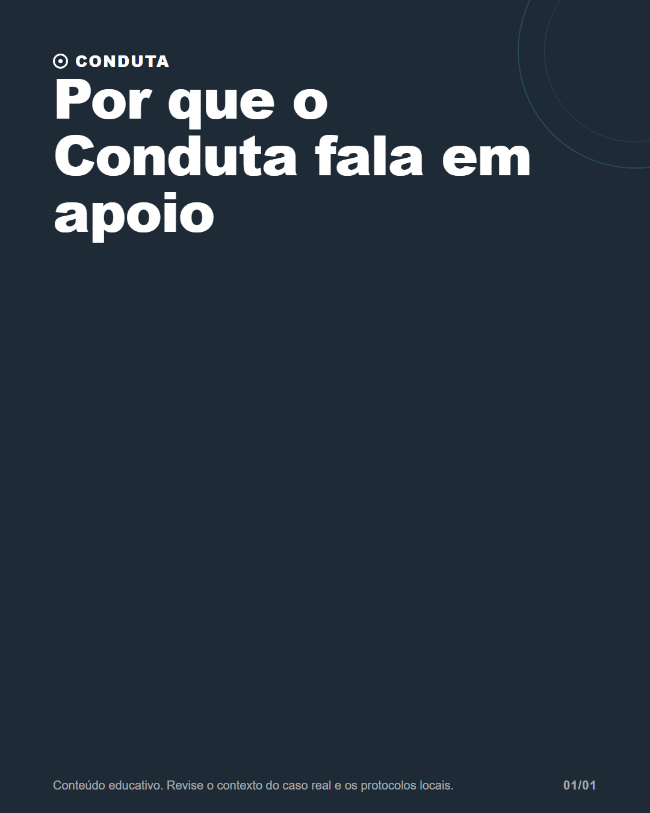

Por que o Conduta fala em apoio

Legenda
Em saúde, uma resposta bem organizada não elimina a necessidade de julgamento. Por isso, o Conduta se posiciona como apoio ao raciocínio clínico: uma forma de revisar possibilidades e pontos de atenção sem transformar tecnologia em autoridade.
CTA: Converse com um colega sobre quais limites uma ferramenta clínica precisa deixar claros.
#tecnologianasaude #eticanamedicina #raciocinioclinico #medicosbrasileiros #condutaclinica
Validação
Nenhum erro impeditivo.
Nenhum alerta.